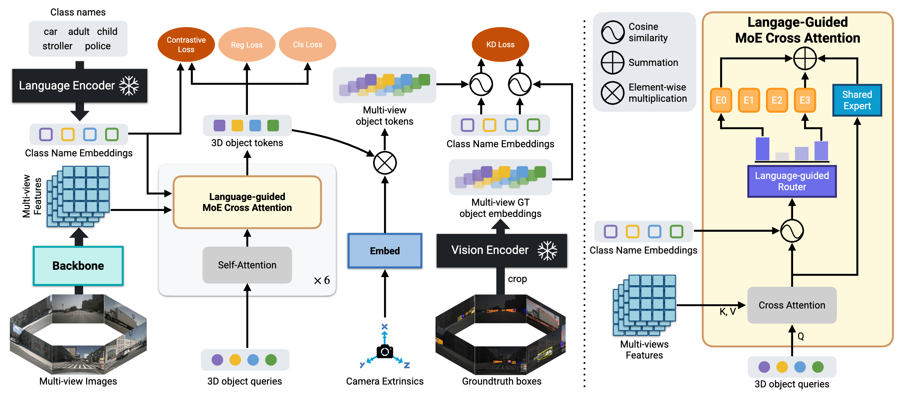
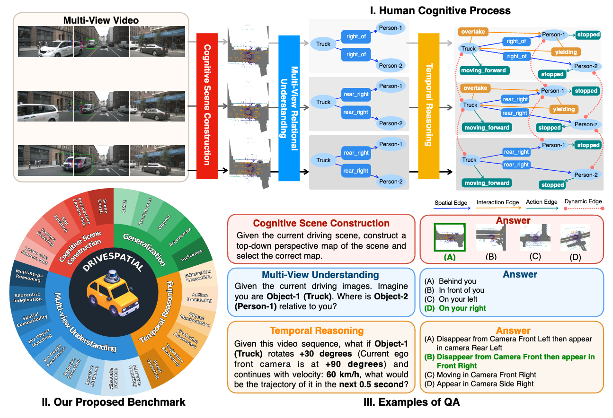
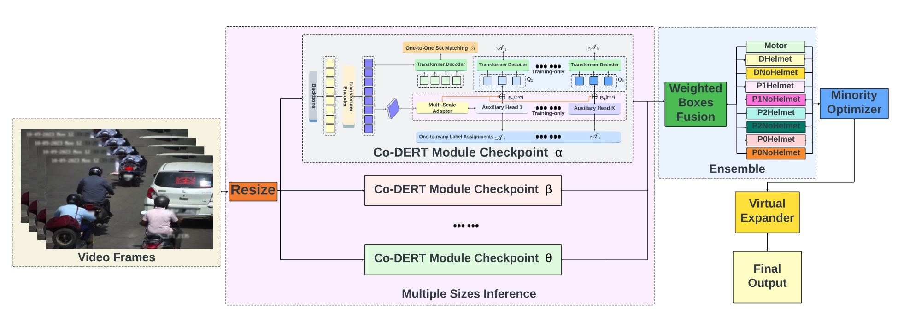
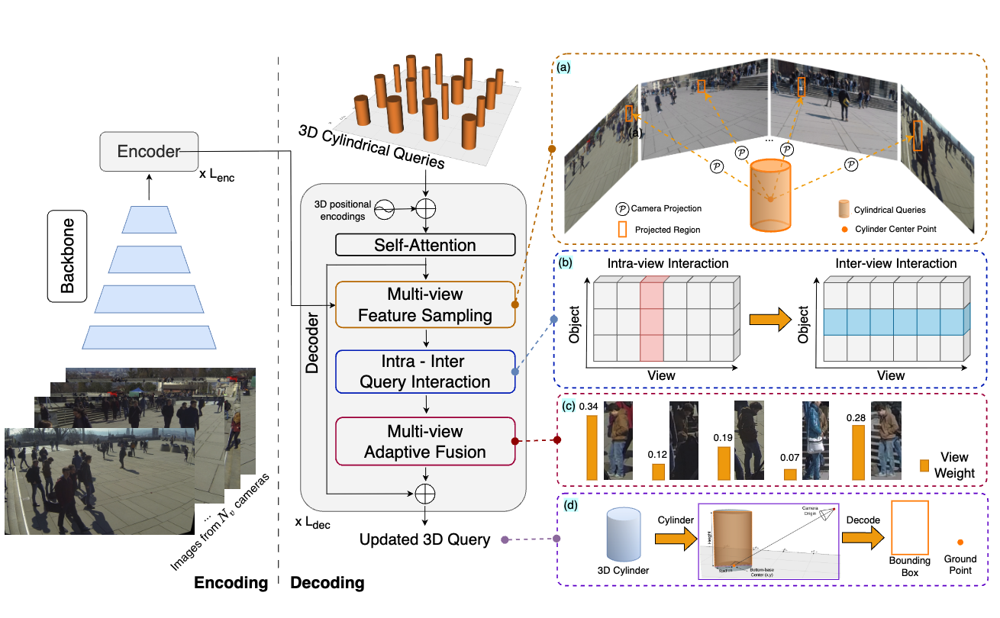

SemLT3D: Semantic-Guided Expert Distillation for Camera-only Long-Tailed 3D Object Detection
IEEE/CVF Conference on Computer Vision and Pattern Recognition (CVPR)
Hello, I'm Hao (Hank), MSc student at UofA, advised by
Dr. Ngan Le.
I work on 4D scene understanding, where I'm interested in
bringing geometric and temporal structure into models that learn from
multi-view images and video, moving perception off the image plane and
into space and time, with an eye toward robotics and autonomous driving.
Looking ahead, I'd like to explore how to make machines reason over long horizons across
both virtual and physical domains, moving past task-specific solutions
toward autonomy that is general-purpose and genuinely reliable.

IEEE/CVF Conference on Computer Vision and Pattern Recognition (CVPR)

Under Review

IEEE/CVF CVPR Workshops (CVPRW)

Transactions on Machine Learning Research (TMLR)
NVIDIA
Built detection models that stay reliable under extreme conditions, including long-tailed classes, fog, edge cases, and distribution shift.
Vietnam HCM AI Challenge
Built an interactive multi-modal video retrieval system that searches terabyte-scale data in under a second.
Vietnam Ministerial-level Scientific Research
FPT Vietnam AI Challenge
Pitched a lost-and-found system combining retrieval with a RAG model, developed as a startup concept with a working proof of concept.
BKAI - Naver Challenge
Scene text recognition (OCR) under varied real-world conditions.
Zalo AI Challenge
Personalized generative model that produces advertisements from text descriptions.